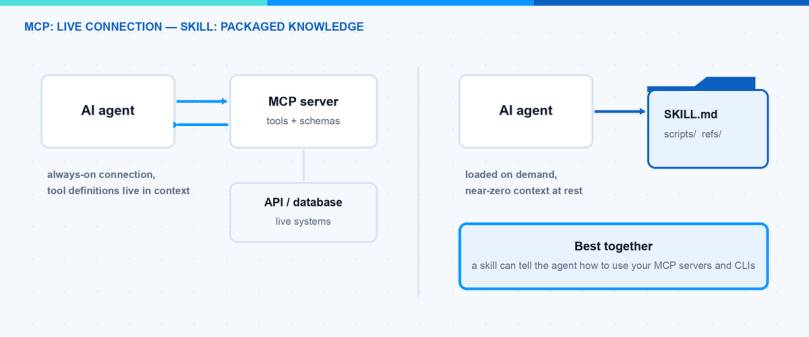
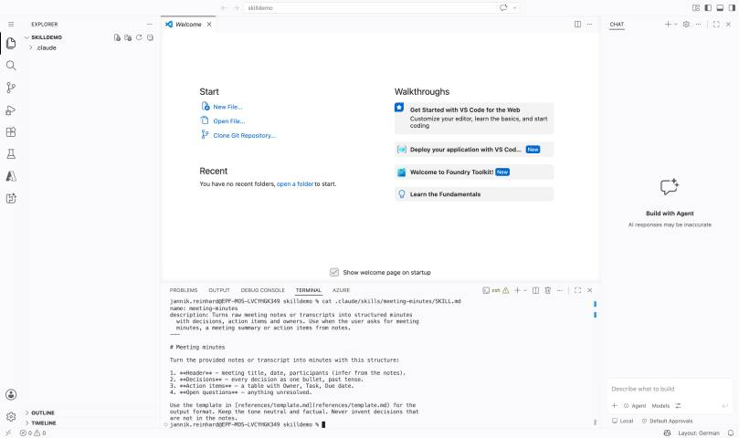
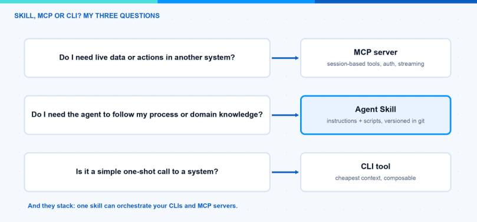

Topic of this page: Skills vs MCP: The Essential 3-Question Decision Guide
In February I wrote about why CLI tools are beating MCP for AI agents. It became my most read post so far, and one follow-up question came up again and again: “Okay, and where do Agent Skills fit in?” That is a fair question, because Skills vs MCP is not an either-or decision. They solve different problems, and they work well together. In this blog post I explain the difference, compare the context cost, and give you a simple decision guide for when to use which.
What Is the Difference Between Skills and MCP?
The Model Context Protocol (MCP) is an open protocol that connects an agent to external systems at runtime. An MCP server exposes tools, and the agent calls them while it is working: query a database, read a ticket, control a browser. It is a live connection over one of two transports — stdio for local servers and streamable HTTP for remote ones — with an OAuth-based authorization flow for the remote case. The ecosystem has grown a lot since Anthropic published the protocol in late 2024. In December 2025 Anthropic donated MCP to the Agentic AI Foundation under the Linux Foundation, so the protocol is now vendor-neutral. There is an official registry with thousands of servers, and the next major spec revision is announced for the end of July 2026 with a focus on enterprise topics like hardened authorization, asynchronous tasks and extensions.
Agent Skills go in the other direction. A skill is not a running service. It is a folder with a SKILL.md file that contains instructions, plus optional scripts and reference files. The agent loads it on demand when the task matches. Anthropic published Skills as an open standard at agentskills.io in December 2025, and it was picked up fast: OpenAI added it to Codex, Google added it to Gemini CLI, and GitHub Copilot and Cursor support it too.
The short version: MCP gives the agent a capability (live access to a system). A skill gives the agent knowledge (your process, your domain rules, your scripts).

What Does a Skill Actually Look Like?
Because this comparison only makes sense when you have seen both sides, here is a complete minimal skill. It is really just this — a folder with one Markdown file:
release-notes/
├── SKILL.md
└── references/
└── template.md
And the SKILL.md inside:
---
name: release-notes
description: Writes release notes from a list of merged pull requests.
Use when the user asks for release notes, a changelog, or a release
summary.
---
# Release Notes
1. Collect the merged pull requests for the release.
2. Group them into: Features, Fixes, Breaking Changes.
3. Write one plain sentence per item. No marketing language.
4. Use the format in references/template.md.
The frontmatter needs only name (max 64 characters, lowercase letters, numbers and hyphens, must match the folder name) and description (max 1024 characters). That is the whole entry cost. Compare that with an MCP server, which is running software with a protocol implementation, transport and authentication.

What Does This Mean for the Context Window?
This is where my CLI vs MCP post started, and the same logic applies here. With MCP, the tool definitions of every connected server are loaded into the context window at session start. It does not matter if the agent uses them or not. A handful of servers can easily cost thousands of tokens before the agent has done anything. In my last post I measured a 35x difference in token usage between a CLI approach and an MCP approach for the same task. To be fair: some clients now defer MCP tool loading and only pull in definitions when they are needed, so the gap is shrinking — but that is a client optimization, not part of the protocol, and the default cost is still real.
Skills work with progressive disclosure, and this is their biggest design win. It is built into the standard itself and has three stages:
- At startup, the agent only sees the name and the description of each skill. That is around 100 tokens per skill.
- When a task matches the description, the agent reads the full SKILL.md body into context.
- Deeper reference files or scripts are only loaded or executed when they are actually needed.
That means you can install fifty skills and pay almost nothing until one of them is used. With fifty MCP servers you would have a serious context problem.
Note: A skill can be large. The trick is to keep SKILL.md lean and move detail into extra files. The agent will only read them when the situation requires it. The specification recommends to keep SKILL.md under 500 lines.
What About Maintenance and Security?
Maintenance is very different between the two. A skill is Markdown plus scripts in a folder. You put it in git, you edit it with any editor, and there is nothing to host. An MCP server is running software. You have to update it, manage authentication tokens, and follow protocol changes — and with a major spec revision landing this summer, “follow protocol changes” is not a theoretical point.
Security is also different, and honestly neither side is “safe by default”. MCP has the more structured story: OAuth-based authorization for remote servers, per-tool permission prompts in the clients, and the upcoming spec revision hardens exactly this area. The risk sits in the supply chain (do you trust that third-party server?) and in prompt injection through tool results. Skills are simpler but sharper: a skill can contain scripts that the agent executes. That is code execution on your machine. And because a SKILL.md is just instructions the model follows, a malicious skill is a prompt injection you installed yourself.
Note: Treat installing a skill like installing software. Only use skills from sources you trust, and read the SKILL.md and the scripts before you install it.
How Do Skills and MCP Compare at a Glance?
Here is my Skills vs MCP comparison in one table:
| Aspect | Agent Skills | MCP |
|---|---|---|
| Context cost | Very low — name and description only, rest loaded on demand | High by default — tool definitions loaded at session start (some clients defer this) |
| Live data | No — static instructions and scripts | Yes — live connection to external systems at runtime |
| Maintenance | Low — edit a Markdown file, version it in git | Higher — a running server with auth, updates and protocol changes |
| Security | Code execution risk, trust the source | Structured auth and permissions, supply chain risk |
| Governance | Open standard at agentskills.io | Vendor-neutral under the Linux Foundation (Agentic AI Foundation) |
| Best for | Processes, domain knowledge, repeatable workflows | Live integrations, stateful sessions, real-time data |
When Should I Use MCP?
Use MCP when the agent needs a live connection to a system while it works. Good examples are controlling a browser, querying a database with an open session, or working against an API that has no good command line tool. MCP also wins when you need stateful interaction — many calls against the same session — or when your company already runs governed MCP servers with proper authentication. In that enterprise case the OAuth story and the central governance are exactly what you want, and a skill cannot give you that.
When Should I Use a Skill?
Use a skill when the problem is not access, but knowledge. Everything that starts with “this is how we do it here” is a skill: your review checklist, your brand guidelines, your release process, your naming conventions. A skill is also the right place for small scripts that the agent should run as part of a workflow.
A real example: this blog is managed by a skill. It is a folder with my style guide, my post template and a few Python scripts that call the WordPress REST API. There is no server running anywhere. The agent reads the skill, follows my process, and executes the scripts when needed.
Hint: Skills and MCP are not competitors. A skill can tell the agent how to use a CLI or which MCP tools to call in which order. The skill holds the process, MCP or the CLI holds the access.
Which Pitfalls Should I Avoid?
A few honest mistakes I see (and made) in practice:
- Rebuilding an integration inside a skill. If your skill’s scripts start to implement authentication, retries and paging for a big API, you are writing a bad MCP server in disguise. Take the existing CLI or MCP server instead and let the skill only describe the workflow.
- Using MCP for static knowledge. A tool that returns your style guide as a tool result is wasted context. Static content belongs in a skill or a plain file.
- Connecting everything “just in case”. Ten MCP servers because you might need them is the fastest way to burn your context window. Connect what the task needs.
- Vague skill descriptions. The agent decides only from the description whether a skill is relevant. If your skill does not trigger, the description is almost always the reason.
- Assuming the skill runs everywhere the same. The SKILL.md format is portable, but tool support differs in the details, for example the experimental
allowed-toolsfield. Test the skill in the agent your team actually uses.
Skills vs MCP: What Would I Choose?
My decision guide is three simple questions:
- I need live data or actions in an external system → MCP.
- I need the agent to follow my process or domain knowledge → Skill.
- I need simple, one-shot access to a system → CLI (see my previous post for why).

In practice I start with a skill plus CLI tools as the default. It is cheap in context, easy to maintain and easy to version. I only add an MCP server when I really need a live, stateful connection that a CLI cannot give me. And when I do, I often wrap it in a skill anyway, so the agent knows my way of using it.
If you want the bigger picture of the whole tooling landscape, I mapped it in Skills, MCP, CLI and computer use in 2026.
The Skills vs MCP question sounds like a battle, but it is really a division of labor: knowledge in skills, live access over MCP, simple access over the CLI. I hope this is a little help.
Stay healthy, Cheers Jannik